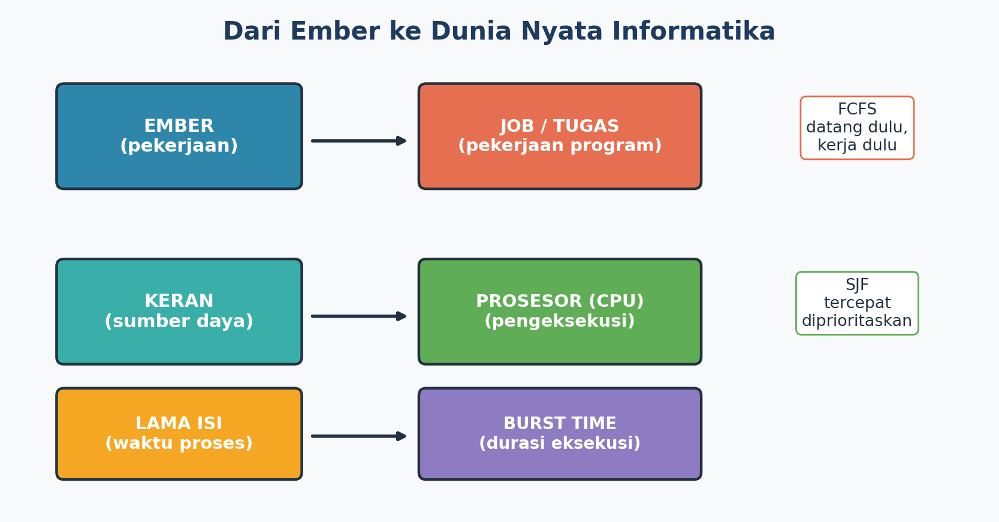
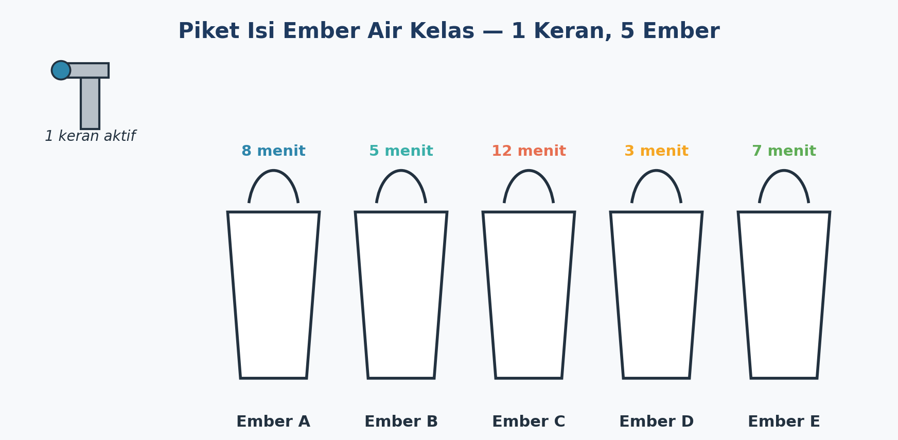
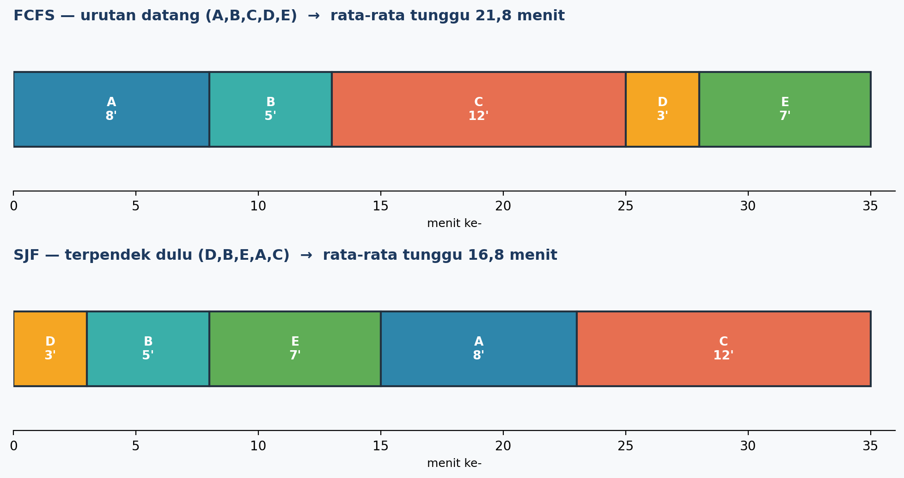
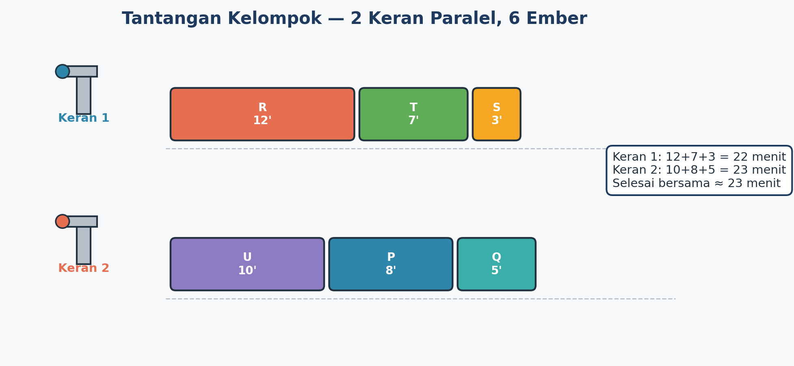

Emang Apa Sih Optimasi Penjadwalan?
Coba bayangin gini: kamu dan teman-temanmu piket kelas, terus ada 5 tugas yang harus diselesaikan satu per satu karena cuma ada 1 orang yang ngerjain. Kalau asal urut aja, kadang hasilnya nggak efisien.
Di dunia komputer, konsep ini kepake banget lho! Komputer punya banyak "pekerjaan" (disebut job atau proses) yang harus dikerjakan prosesor (CPU). Komputer juga harus mikirin: proses mana yang dikerjain duluan, biar komputer nggak lemot.

🪣 Cerita: Piket Isi Ember Air Kelas
Kadang aliran air di sekolah suka nggak stabil di jam-jam tertentu. Nah, regu piket kelas VII kebagian tugas ngisi beberapa ember cadangan — buat nyiram tanaman toga sekolah dan cadangan air di wastafel. Masalahnya, ember-embernya beda ukuran, jadi lama ngisinya juga beda-beda!

8'
5'
12'
3'
7'
Pertanyaannya: kalau kamu jadi petugas piket dan cuma ada 1 keran, ember mana yang kamu isi duluan supaya rata-rata semua orang nggak nunggu lama?
Cara 1 — FCFS (First Come First Served)
Asal urut aja sesuai nomornya: A → B → C → D → E.
Cara 2 — SJF (Shortest Job First)
Dahulukan yang paling cepat kelar dulu: D → B → E → A → C.

🧠 Coba sendiri: kalau urutannya C, A, E, B, D — berapa rata-rata waktu tunggunya? (klik untuk lihat jawaban)
Ternyata lebih buruk dibanding Cara 2 (16,8 menit)! Ini membuktikan strategi SJF memang paling efisien untuk kasus 1 sumber daya.
🚰 Tantangan Level Up: 2 Keran, 6 Ember
Setelah jago dengan 1 keran, sekarang naik level! Kali ini ada 2 keran yang bisa dipakai bersamaan (paralel), dan 6 ember yang harus dibagi habis ke kedua keran itu. Tantangannya: bagi tugas supaya SEMUA ember selesai secepat mungkin.

🌍 Di Mana Lagi Kita Ketemu Optimasi Penjadwalan?
Jadwal Pelajaran
Supaya guru dan ruang kelas nggak bentrok jadwalnya.
Antrean Kasir
Kasir mana yang lebih cepat melayani pelanggan?
Ojek Online
Mengatur driver mana yang paling pas jemput penumpang.
Komputer & HP
Mengatur aplikasi mana diproses duluan supaya nggak lemot.
⚡ Kuis Cepat: Cek Pemahamanmu
Klik jawaban yang menurutmu paling tepat!
1. Strategi apa yang mendahulukan pekerjaan tercepat agar rata-rata waktu tunggu paling kecil?
2. Kalau ada 2 sumber daya (misalnya 2 keran), strategi pembagian tugas yang baik adalah...
📝 Rangkuman Kilat
- Optimasi penjadwalan = mengatur urutan/pembagian pekerjaan supaya paling efisien, bukan cuma "selesai".
- FCFS = dikerjakan sesuai urutan datang. Sederhana, tapi belum tentu paling efisien.
- SJF = kerjakan yang paling cepat dulu → rata-rata waktu tunggu jadi lebih kecil.
- Kalau sumber dayanya lebih dari satu, tugas dibagi supaya beban tiap sumber daya seimbang.
- Konsep ini dipakai di banyak hal di sekitar kita, termasuk cara kerja komputer!
🤔 Ayo, Renungkan
Setelah mempelajari materi ini, coba jawab pertanyaan berikut di buku catatanmu:
- Menurutmu, kenapa penting belajar mengatur urutan pekerjaan, bukan cuma sekadar menyelesaikannya?
- Ceritakan satu pengalamanmu yang mirip dengan kegiatan mengisi ember — misalnya mengerjakan PR, membantu orang tua, atau tugas kelompok.
- Kalau kamu jadi "komputer" yang harus mengatur banyak tugas sekaligus, strategi apa yang akan kamu pakai?
- Bagian mana dari materi ini yang menurutmu paling menantang? Ceritakan alasannya.